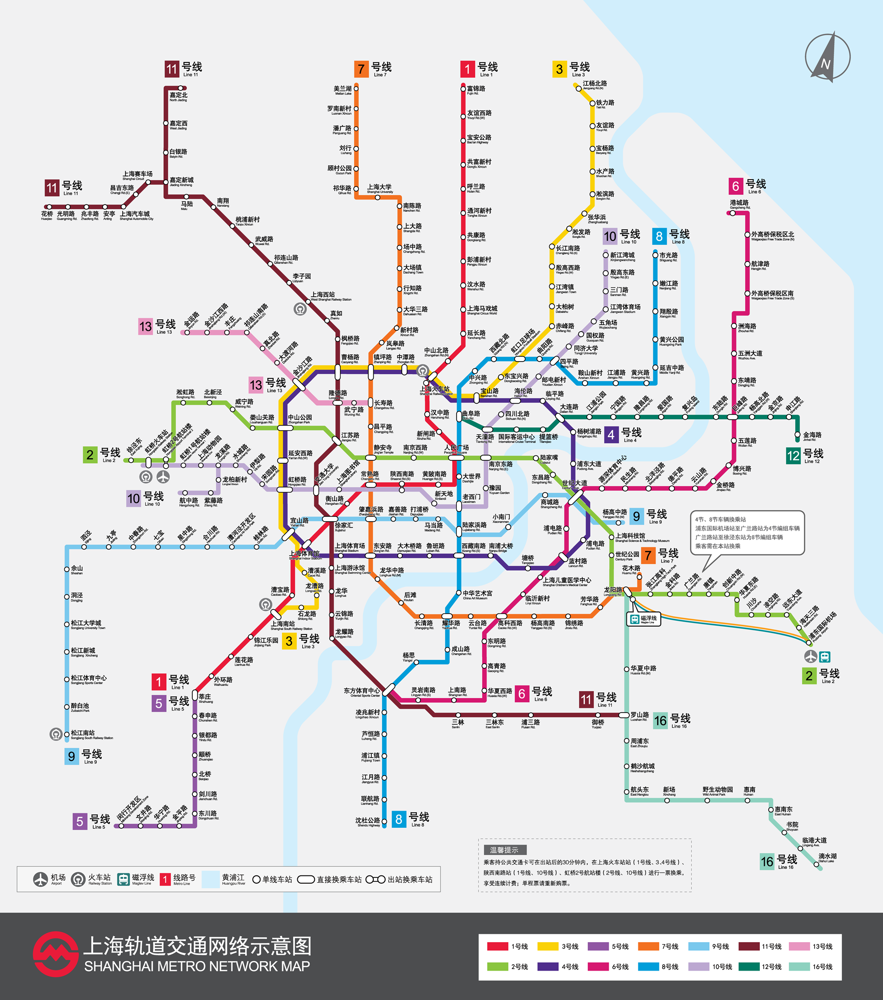

<div class="weui_tab_bd" id="weui_tab_bd6" style="background: url(./assets/img/hostImg/bg.jpg)36%;background-size:cover;height: 100%;">
	<div class="mapLines">
		<div class="gj">
			<h4>公交路线：<i class="iconfont icon-dingwei" onclick="window.location.href='hostProfile3.html'"></i><sub>--点击查看详情</sub></h4>
			<p>公园东路华浦路（向北步行300米）</p>
			<p>途径路线：沪青盈专线；沪商专线区间；沪朱专线；青华专线；青浦11路；青浦14路；青浦2路；青浦7路；青沪线；上朱线；上朱线区间</p>
			<p>公园东路华浦路--中山医院--招呼站（向北步行510米）</p>
			<p>途径路线：沪青盈专线；青纪线；青浦4路；清徐线；清徐线区间</p>
			<p>途径路线：青黄专线</p>
		</div>
		<div class="dt">
			<h4 style="margin: 5px 0px;">上海地铁：</h4>
			
		</div>
	</div>
</div>